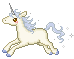

CREDITS & RESOURCES

I found that I learned best by playing with existing code and going from there, picking up resources of what I wanted to figure out along the way. This is a collection of links to share what I've used to create this site! I will eventually create a go-to resources section, as this is intended to link just about anything I've used to make this site in order to give credit where it's due.ACCESSIBILITY
The 7 Deadly Neocities Sins — a great beginner article if you want to make your site more accessible for others
Solaria's Beginner's Accessibility Guide — focuses on 3 common accessibility problems + how to fix them
GENERAL/MISC.
petrapixel's clipboard — easy-to-copy symbols
ishimori — codes, fonts, etc.
32-bit cafe's resource list — quite extensive!
Ame's Neko no Kuni Link Directory
libre fonts by womxn — my journal fonts were found here
TOOLS
DrLinkCheck— to check for bad links on your site
Photopea— an online image editor
Squoosh.app— an image compressor
filegarden— file hosting site
accessible palette— create color systems with consistent lightness & contrast
WordtoHTML— Online Converter and Cleaner
EZGif— go-to tool for editing/formatting gifs
Flexbox Labs— visual tool to create layouts using CSS Flexbox
coolors— a color-palette tool (from scratch or from a pic)
HTML Checker— to check html files for errors
Ditherit— an image dithering tool
Randoma11y— an accessible color combo generator
CODING
CSS-Tricks' Flexbox Guide — I reference this guide a lot, as well as their almanac
How to align and float images on your website
Tippy.js — customizable tooltip using JS
deploy to neocities template — the easiest way I've found to get neocities set up with github
98.css — Windows98 themed CSS library
CODE SNIPPETS
Scripted - code snippets and other resources
lite-youtube-embed — makes loading YT videos faster
Zonelets — an easy way to set-up a blog using Neocities (can also be used with Nekoweb)
status cafe CSS template — a fully commented css template for status.cafe profiles, if you'd like to customize yours
status.cafe tips — pixeliana gathered some CSS code snippets to start customizing a status.cafe profile
Color Schemes and Theme Switchers (CSS and JS) — Solaria's guide to setup light/dark theme modes
Listfauxgraphy template — a list template similar to Listography's interface
Tessisamess' code directory — tons of templates, mostly for OC creation
Bechnokid's freezeframe.js tutorial
Entropically's freezeframe.js tutorial
how to add an external link icon with CSS
display last update/visitor count on Neocities
lines on side of headings in CSS
how to copy text to clipboard on button-click
change the click explosion symbol
Make an open book with only CSS/HTML
"last updated" javascript code— domain-specific, can be used anywhere
punkwasp's pastebin — font-selector code snippets
AESTHETICS
pixel-soup — cute pixel collection
foollovers — Japanese site with icons and graphics, etc.
Web Badges World — large database of badges
artwork — pixels
whimsical — pixel art/materials
pixelsafari — graphics resource library
sadthemes' pixel library — sorted by color!
symbl.cc — a list of every unicode character
broider — CSS border tool with tons of border codes you can also customize
cursor.cc — cursor creator with a cursor database
master background post — by tenshiikisu on tumblr
gifcity — icons, backgrounds, blinkies, etc.
unilist — unicode symbol list, easy click to copy + paste
engrampixels — cute pixel graphics
asterism — web graphics, fonts
WIDGETS
FC2 Clap — Used on the home page, widget to let people clap for you!
FC2 Counter — Used on the home page, widget to see your site visitor count
maxpixel's last.fm widget — Used in the sidebar
last.fm tracks widget — Used in the medialog
webdeck player — Used in the sidebar, music player for youtube playlists
TUTORIALS / GUIDES
website organization tips — tips that I found really helpful early on
How to use VS Code Live Server Local Host on Mobile phone — the easiest way I've found to test my code on mobile devices, you can see live edits this way!
Nekoweb Docs — a small guide to help get started on Nekoweb
Nekoweb Wiki — another small guide to get started on Nekoweb
INTERNET READS
Reclaiming Online Spaces Manifesto by Ivan Papiol (2023) — a well-written piece about how we can reclaim conscious connection through the internet
TIP: Never leave your email address raw in the mailto link! Here's what to do instead
ARCHIVED
Resources with now-dead links :( I am keeping them here in case new links can be found.
Multi-Screen Test— test your site at different screen resolutions & devices
deploy to neocities with github — I tried a few different tutorials (and had to start over a few times), but I found this one the easiest to follow
daily tarot widget — Used on the altar page